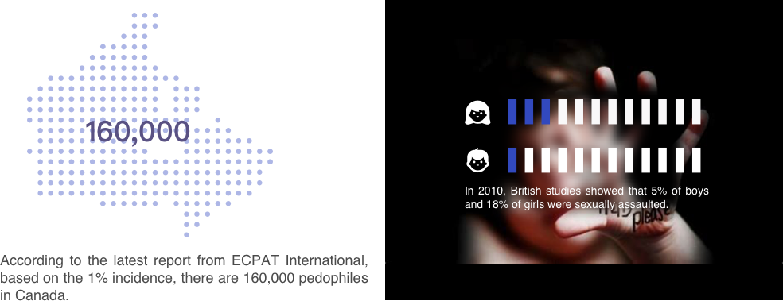

Pedophilia is the sexual preference for or a strong sexual interest in children. The term usually refers only to sexual preference for/interest in prepubescent or early pubescent children.
In recent years, the problem of paedophilia has been paid more and more attention by people. On the one hand, people think that pedophilia is a big problem. The reason is simple - sexuality in pedophile relationships can harm children, and about one in five girls and one in twelve boys have suffered. To put it another way, people might treat pedophiles like non-discriminatory homosexuals. They also have the right to pursue what they like. How to treat this issue objectively? We need to revisit this particular group of people.
Some pedophiles only have the urge of paedophiles and are consciously suppressed; others are satisfied by peeping and touching the genitals of nude children; some pedophiles have similar sexual intercourse.
This is three levels, the first level, which only stays in the brain and has nothing to do with the category of "sexual assault";
The second and third levels, there are impulses, and then put this impulse into action, it may involve the crime of defamation, rape and other crimes.
In studies, pedophiles show signs that their sexual interests are related to brain structure and that at least some differences existed in their brains before birth. For example, pedophiles show greatly elevated rates of non-right-handedness and minor physical anomalies. Thus, although pedophilia should never be confused with homosexuality, pedophilia can be meaningfully described as a sexual orientation. Scientists have more specifically called it an “age orientation.” Caution has to be used, however, so as not to confuse the scientific use of the phrase “sexual orientation” with its use in law. Because the phrase “sexual orientation” has been used as shorthand (or as a euphemism) for homosexuality, there exist laws and policies barring discrimination on the basis of “sexual orientation.” These were not likely intended to refer to pedophilia.
The inner device rotates clockwise and the outer device rotates counterclockwise. The viewer stands in the center. At one moment, within the viewer’s perspective, the adult and adult pictures of the two layers will coincide with the child’s picture and form a complete picture.